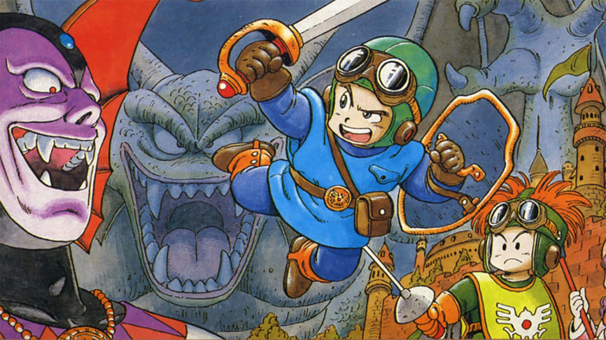
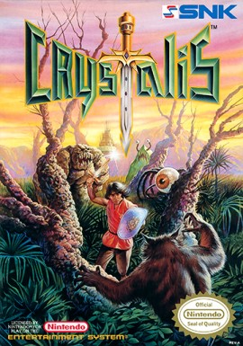

Mejores titulos RPG de los 90
Dragon Quest 2
"Dragon Quest II: Luminaries of the Legendary Line" es un juego de rol lanzado en 1987 para NES, como secuela del icónico "Dragon Quest". En esta entrega, los jugadores controlan a tres héroes: el príncipe de Midenhall, la princesa de Moonbrooke y el héroe de Alefgard, quienes deben unirse para derrotar al malvado monstruo Hargon y restaurar la paz en el mundo. El juego amplió las mecánicas de su predecesor, introduciendo un sistema de party (grupo) y un mundo más extenso para explorar. Con una narrativa rica y un estilo de arte distintivo, "Dragon Quest II" consolidó la popularidad de la franquicia y sentó las bases para futuros títulos en la serie. Su legado perdura como un clásico fundamental en el género de los JRPG.
Crystalis
Crystalis en un juego de acción y rol en el que se controla a un héroe amnésico en su lucha contra el Emperador Draygon, que ha combinado la ciencia y la magia para crear un poderoso ejército con el que pretende conquistar lo que queda de una tierra post-apocalíptica, incluyendo una torre voladora que es la última esperanza de la humanidad.